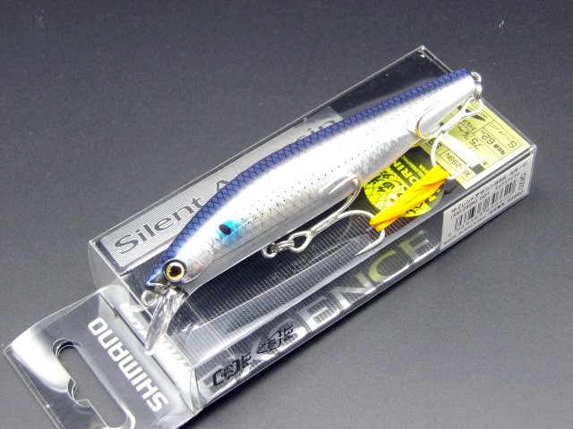

サイレントアサシン99S
（EXSENCE SILENT ASSASSIN 99S）
サイレントアサシン99Sは、シマノのシーバスブランド「エクスセンス」の定番ミノー、サイレントアサシンの99mmシンキングモデルです。
今は、遠投と素早い泳ぎ出しの「ジェットブースト」と、ボディの中の反射板が揺れて光る「フラッシュブースト」の2種類があります。どちらも99mm・17gのシンキングで、港湾から河川まで、流れの中のシーバスを狙えます。

画像出典:キングフィッシャー
スペック
- メーカー
- SHIMANO（シマノ）
- ブランド
- エクスセンス
- タイプ
- シンキングミノー
- 全長
- 99mm
- 重さ
- 17g
- 品番
- XM-299N（ジェットブースト）／XM-299V（フラッシュブースト）
- ターゲット
- シーバス
- 価格
- 2,070円（税別・ジェットブースト）／2,350円（税別・フラッシュブースト）
▼今すぐチェック

サイレントアサシン99Sの特徴
エクスセンスの定番ミノーの、99mmシンキングモデル
-
ジェットブースト：遠投と素早い泳ぎ出し
重心移動のウェイトを貫通シャフトとスプリングで支える「ジェットブースト」。キャストの初速・飛行姿勢の安定・泳ぎ出しの速さの3つを重視して作られている。
-
フラッシュブースト：止めても光る反射板
ボディの中にスプリングで吊るした反射板が、わずかな振動でも揺れて光る「フラッシュブースト」。ドリフト中や巻くのを止めた時にも、小刻みにフラッシングを出し続ける。
-
流れの中でも泳ぎが破綻しにくい
公式では、泳ぎが破綻しない流れの速さ（流速スペック）を、ジェットブーストは75cm/秒〜、フラッシュブーストは55cm/秒以上としている。
サイレントアサシン99Sの使い方
基本はただ巻きです。着水したらカウントで沈めて、狙いたいレンジに合わせてから一定のスピードで巻くと、シンキングの強みを生かして同じ深さを長く引けます。
流れのある場所では、アップクロスに投げて流れに乗せるドリフトも効果的。フラッシュブーストなら、巻くのを止めて流している間も反射板が光り続けます。
サイレントアサシン99Sの得意な状況
港湾の明暗や橋脚まわり、流れのある河川など、シーバスが流れの中でベイトを待っている場所で出番です。
フローティングでは届かない、少し下のレンジを流れの中でも安定して引けるのが強み。遠投したい日はジェットブースト、スレたシーバスに止めや流しで見せたい日はフラッシュブースト、と選べます。流れの中でも同じレンジを長く引けるので、河川や港湾で安定して釣れる1本です。
ワンポイント
同じ99Sでも、流れが速い場所はジェットブースト、流れがゆるい場所や止めて見せたい時はフラッシュブーストと使い分けると、それぞれの強みを生かせます。
ジェットブーストとフラッシュブーストの違い
| 項目 | ジェットブースト |
フラッシュブースト |
|---|---|---|
| 全長／ |
99mm／ |
99mm／ |
| 飛距離 | 62m | 61m |
| 沈下速度 | 35cm/ |
32cm/ |
| 流速スペック | 75cm/ |
55cm/ |
| フック | #4×2 | #5×2 |
| 価格 |
2,070円 | 2,350円 |
| 強み | 遠投と |
止めても |
ジェットブーストと同じスペック（99mm・17g・飛距離62m・沈下速度35cm/秒・流速スペック75cm/秒〜）で、スプリング内蔵の重心移動「AR-C」を名前に付けた「サイレントアサシン 99S AR-C」も販売されています（販売店の記載より）。上の画像もAR-Cのものです。
どちらにも、浮く「99F」とサスペンドの「99SP」があります。
スペックはシマノ公式HP（ジェットブースト・フラッシュブースト）の記載より。
カラー
サイレントアサシン99Sのカラーの一部を紹介します。
| モデル | カラーの |
|---|---|
| ジェットブースト | キョウリンGS・ |
| フラッシュブースト | Nマイワシ・ |
※カラーはシマノ公式HPの記載より。時期によってラインナップが変わることがあります。
▼今すぐチェック
サイレントアサシン99Sに似ているルアー
-
 X-80SW
メガバス
詳細はこちら＞
X-80SW
メガバス
詳細はこちら＞
80mmのスローシンキングミノー。もう少し小さいシルエットで比べたい時に。
-
 ビーフリーズ78S
ラッキークラフト
詳細はこちら＞
ビーフリーズ78S
ラッキークラフト
詳細はこちら＞
固定重心の78mmシンキングミノー。港湾のストラクチャー攻略に。
-
 モニカ125F ジェットブースト
シマノ
詳細はこちら＞
モニカ125F ジェットブースト
シマノ
詳細はこちら＞
同じジェットブーストのシャローランナー。表層を引きたい時に。